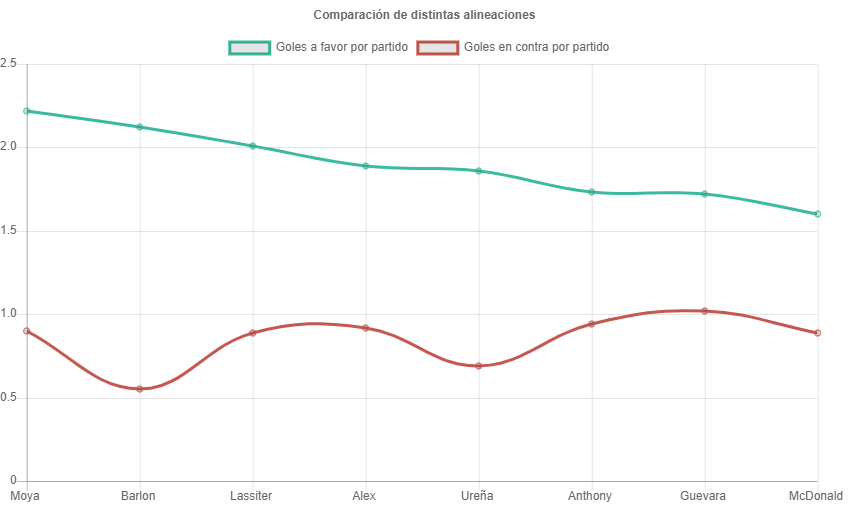
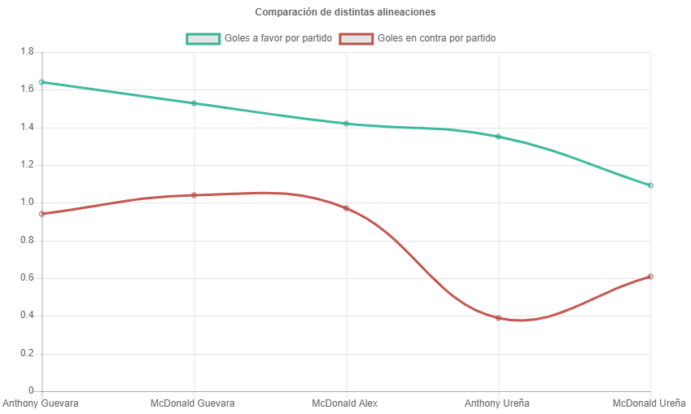
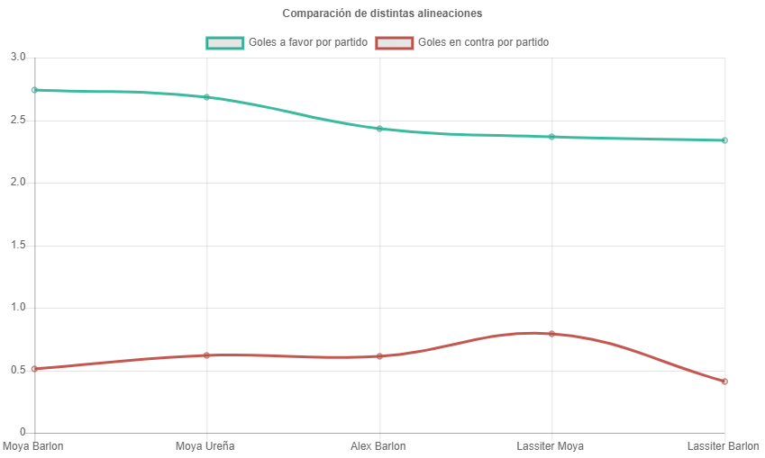

Cuáles son los Jugadores Ofensivos más Eficientes de la Liga Deportiva Alajuelense?
Escrito por Francisco Llobet Matamoros
Para el análisis de la Capacidad Anotadora de la Liga Deportiva Alajuelense se consideran los ocho jugadores ofensivos con más minutos en el campeonato de “Invierno 2019” que son:
- Ariel Lassiter = 2 018 minutos
- Alex López = 1 758 minutos
- Jonathan McDonald = 1 700 minutos
- Allen Guevara = 1 672 minutos
- Jonathan Moya = 1 313 minutos
- Marco Ureña = 1 306 minutos
- Anthony López = 1 147 minutos
- Barlon Sequeira = 975 minutos
Se realiza una cuantificación de los goles que hizo LDA cuando estos jugadores estaban presentes en el terreno de juego. Esta cantidad de goles se va a presentar en los gráficos como la cantidad de goles marcados por LDA con el jugador presente por 90 minutos, es decir el tiempo de un partido completo.
Se ordena el gráfico de mayor a menor en cuanto a goles a favor por partido, y se observa la variación entre los distintos jugadores.
En este campeonato de “Invierno 2019”, el jugador donde “La Liga” ha sido más eficiente ofensivamente es Jonathan Moya, seguido por Barlon Sequeira. Con Barlon Sequeira se presenta un caso interesante porque él todavía No ha anotado, pero el equipo cuando él está presente en el terreno ha anotado una muy buena cantidad de goles. Seguidamente por “Ranking” de eficiencia está el goleador del equipo Ariel Lassiter, luego Alex López y Marco Ureña.
Los jugadores donde el equipo ha sido menos eficiente anotando goles cuando ellos están en el terreno de juego son: Anthony López, Allen Guevara y Jonathan McDonald. Como complemento se analiza las combinaciones de dos jugadores jugando juntos para determinar primero donde el equipo ha sido menos eficiente anotando goles. Las cinco parejas menos eficientes se muestran en el siguiente gráfico:
La pareja de jugadores con la menor eficiencia son Jonathan McDonald y Marco Ureña, seguidos por Anthony López y Marco Ureña. Se había observado que Marco Ureña cuando se analizan los resultados individualmente del equipo resulta en un nivel de eficiencia promedio, pero cuando juega con Jonathan McDonald o Anthony López de compañeros el equipo tiende a tener una eficiencia más baja. Estos son algunos de los ejemplos de datos que se pueden obtener de estos análisis.
A continuación, se analiza las parejas donde el equipo ha sido más eficiente, y se muestran en el siguiente gráfico: 
Como era de esperar por los resultados individuales, observados anteriormente, la pareja donde el equipo ha sido más eficiente es Jonathan Moya y Barlon Sequeira, que individualmente son los que presentan la mayor eficiencia. Un caso interesante es el de Ureña con Moya, porque como vimos anteriormente cuando Ureña juega con McDonald o Anthony López su eficiencia es de las más deficientes, pero cuando hace pareja con Moya, el equipo aumenta su capacidad de anotar goles.